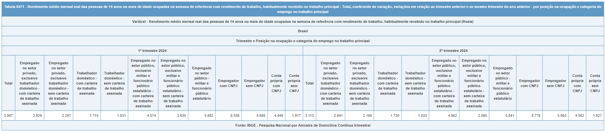

Reproduzindo a tabela
Objetivo
Reproduzir tabela 6471, que apresenta o Rendimento médio mensal real das pessoas de 14 anos ou mais de idade ocupadas na semana de referência com rendimento de trabalho, habitualmente recebido no trabalho principal.
Estimando valores
Usando a função svyby, é possível calcular estimativas para vários domínios. Dessa forma, vamos calcular a média da variável VD4019 para os domínios da variável VD009.
VD009 - Posição na ocupação e categoria do emprego do trabalho principal da semana de referência para pessoas de 14 anos ou mais de idade;
VD4019 - Rendimento mensal habitual de todos os trabalhos para pessoas de 14 anos ou mais de idade (apenas para pessoas que receberam em dinheiro, produtos ou mercadorias em qualquer trabalho);
Também podemos calcular variáveis de rendimento deflacionadas. Multiplicando o rendimento pelas variáveis Habitual ou Efetivo, podemos obter estimativas sob o valor real.
# Carregando pacotes----------------------------------------------------------------------------
library(PNADcIBGE)
library(survey)
# Definindo parâmetros------------------------------------------------------------------------
# Cria tabela com periodos de interesse (anos e trimestres)
periodos <- expand.grid(year = 2023:2024, quarter = 1:4)
periodos <- periodos[order(periodos$year, periodos$quarter), ]
periodos <- periodos[1:6,]
dados$variables$Efetivo
# Define variáveis de interesse da PNADc
variaveis_selecionadas <- c("VD4009", "VD4019")
# Importando dados e estimando valores de interesse -----------------------------------------
# Cria data frame para armazenar resultados
df <- data.frame()
# Cria looping iterando sobre os trimestres selecionados
for(i in 1:nrow(periodos)){
# Importando dados
dados = get_pnadc(year = periodos$year[i], quarter = periodos$quarter[i],
vars = variaveis_selecionadas)
# Transformando a variável para valores reais usando o deflator
dados$variables = transform(dados$variables, VD4019_real = VD4019*Habitual)
# Estimando valores
## O resultado apresenta duas linhas. A primeira contém "Pessoas na força de trabalho" e a
## segunda "Pessoas fora da força de trabalho".
resultado <- svyby(~VD4019_real, ~VD4009, dados, svymean, na.rm = TRUE)
# Estimando CV
cv = cv(resultado)
# Criando data frame temporário com resultados do trimestre
df_temp <- data.frame(
year = rep(periodos$year[i], 10),
quarter = rep(periodos$quarter[i], 10),
ocupacao = resultado[1],
taxa = resultado[2],
cv = cv[1])
# Gravando resultados no data frame
df <- rbind(df, df_temp)
# Remove dados da do trimestre da memória
remove(dados)
}Tabela
Usando o pacote gt é possível formatar uma tabela para exibir os valores calculados.
# Carregando pacote
library(gt)
# Criando tabela
gt(df) |>
tab_header(
title = "6471 - Rendimento médio mensal real das pessoas de 14 anos ou mais de idade ocupadas na semana de referência com rendimento de trabalho, habitualmente recebido no trabalho principal",
subtitle = "Variável - Rendimento médio mensal real das pessoas de 14 anos ou mais de idade ocupadas na semana de referência com rendimento de trabalho, habitualmente recebido no trabalho principal"
) |>
cols_label(
year = "Ano",
quarter = "Trimestre",
VD4009 = "Ocupação",
VD4019_real = "Renda média",
cv = "Coeficiente de Variação"
) |>
fmt_percent(
columns = c(cv),
decimals = 2) |>
fmt_number(
columns = c(VD4019_real),
decimals = 2
) |>
opt_interactive()6471 - Rendimento médio mensal real das pessoas de 14 anos ou mais de idade ocupadas na semana de referência com rendimento de trabalho, habitualmente recebido no trabalho principal
Variável - Rendimento médio mensal real das pessoas de 14 anos ou mais de idade ocupadas na semana de referência com rendimento de trabalho, habitualmente recebido no trabalho principal